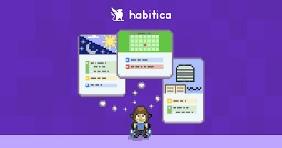

Home
Articles
Habits
Skills
Quotes
Books
Habits

Practise Voice Exercises
Why? Because I want to speak openly and confidently with my natural voice.
Body and Posture Awareness
Why? Because it helps me relax body's tension and so I can learn to listen to what by body tension is telling me.
Breath Awarness and Deep Breathing
Why? Because it brings me back in the present moment and helps to keep the emotions in balance.
Develop Concentration
Why? Because we live in a world of distractions and concentration is one of the most valueable skills to develop to succeed in life.
Emotional State Awarness
Why? Because emotions are the driving force behind all of my actions and becoming aware of emotions is the first step for mastering them.
Drinking 8 glasses of Water Per Day
Why? Because keeping hydrated is crucial of health and well-being.
Cultivate a State of Abundance
Why? Because Scarcity mindset is the source of all suffering and I want to live a happy life.